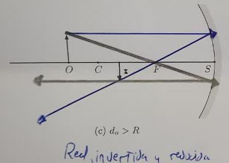
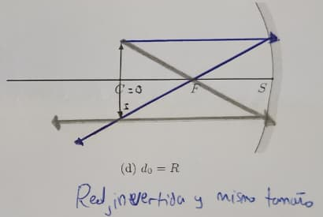
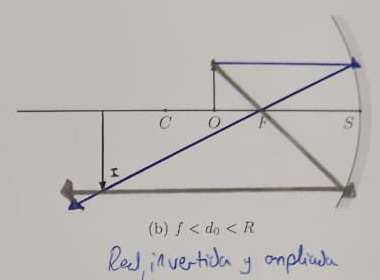
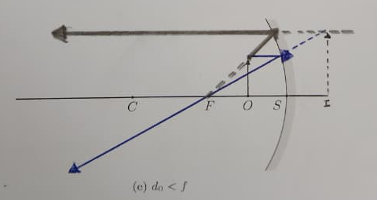
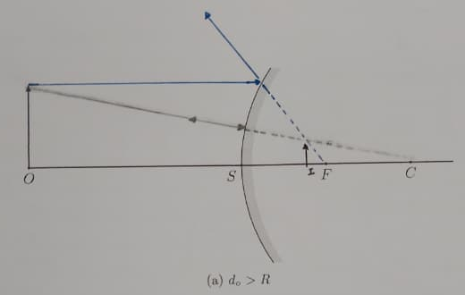
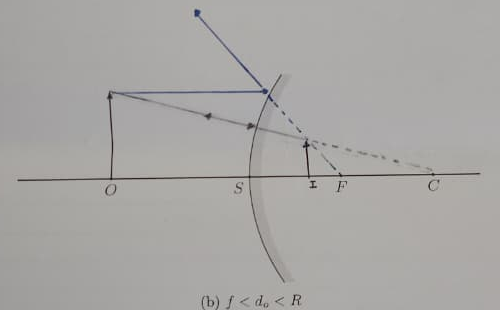
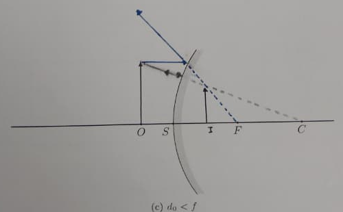

Con las mismas diez mediciones calculamos la distancia focal de dos maneras
19.9 cm
con la ecuación del espejo
21.2 cm
con el ajuste de M contra di
¿Cuál dice la verdad?
Objetivo y conclusión
Objetivo
Analizar las imágenes que forma un espejo esférico y medir la distancia focal y el radio de curvatura de su cara cóncava.
Conclusión principal
La cara cóncava cumple la ecuación del espejo con f = 19.9 cm y R = 39.7 cm, a menos de 1 % del fabricante. La convexa siempre da una imagen virtual.
Conceptos clave
Espejo
Cóncavo Convexo Foco
Imagen
Real Virtual Aumento
Método
Trazado de rayos Ecuación del espejo Ajuste lineal
Fundamento teórico
1d0+1di=1f
ecuación del espejo
M =hiho= −did0
aumento
f =R2
foco y radio
Juntando las dos primeras, el aumento depende linealmente de di: una recta de pendiente −1/f e intercepto 1.
M = 1 −dif
f > 0 cóncavo · f < 0 convexo · di > 0 imagen real · di < 0 imagen virtual · M < 0 imagen invertida
Métodos: equipo utilizado
Riel óptico con escala
Fuente de luz con flecha de 2 cm
Soporte para pantalla
Soportes deslizantes
Espejo cóncavo-convexo de doble cara, f = 20 cm
Regla de 30 cm y hojas bond
Métodos: procedimiento
1. TRAZADO DE RAYOS
Apéndices A y B, antes de medir
Cinco casos del cóncavo y tres del convexo
2. ESPEJO CÓNCAVO
Flecha en 0 cm del riel
Cuadro 1: diez posiciones de 45 a 91 cm
Cuadro 2: d0 = 50, 40, 35 y 10 cm
3. ESPEJO CONVEXO
Mismo espejo, volteado
d0 = 50, 30 y 10 cm
Búsqueda de la imagen con la pantalla
Resultados
Cuadro 1: diez posiciones
N°
d0 (cm)
di (cm)
hi (cm)
M
f (cm)
1
52.0
32.0
1.1
−0.55
19.81
2
45.0
35.0
1.6
−0.80
19.69
3
48.0
34.0
1.4
−0.70
19.90
4
57.0
31.0
1.1
−0.55
20.08
5
62.0
29.0
1.0
−0.50
19.76
6
65.5
28.5
0.9
−0.45
19.86
7
70.0
28.0
0.8
−0.40
20.00
8
73.0
27.0
0.8
−0.40
19.71
9
79.0
27.0
0.7
−0.35
20.12
10
91.0
25.0
0.6
−0.30
19.61
Las diez imágenes: reales, invertidas y reducidas
f = d0·di / (d0 + di) en cada fila: de 19.61 a 20.12 cm
Promedio: f = 19.85 ± 0.05 cm
Error frente a 20 cm: 0.7 %
Ajuste: M = −0.0471 di + 0.896
R² = 0.958
f = 21.2 ± 1.6 cm
R = 42.5 ± 3.1 cm
La teoría con f = 20 cm se separa 0.03 como máximo
Cuadro 2: cuatro casos
Caso
d0 (cm)
di medido
di teórico
M estimado
M teórico
Diferencia di
d0 > R
50
33.0
33.3
−0.70
−0.67
1.0 %
d0 = R
40
40.0
40.0
−1.00
−1.00
0 %
f < d0 < R
35
42.0
46.7
−1.25
−1.33
10.0 %
d0 < f
10
no se proyecta
−20.0
—
+2.00
no aplica
El signo y el tamaño estimados coinciden con la teoría en los tres casos reales
Con d0 < f la imagen no apareció en la pantalla: di teórico negativo
Espejo convexo
d0 = 50 cm · M teórico 0.29
d0 = 30 cm · M teórico 0.40
d0 = 10 cm · M teórico 0.67
En ninguna posición se formó imagen en la pantalla: la flecha solo se ve dentro del espejo
Discusión
Observado frente a los diagramas
d0 > R

Real, invertida, reducida Estimado: M ≈ −0.7
d0 = R

Real, invertida, igual tamaño Estimado: M ≈ −1
f < d0 < R

Real, invertida, ampliada Estimado: M ≈ −1.25
d0 < f

Virtual, derecha, ampliada Observado: no se proyecta
Los cuatro casos coinciden con nuestros diagramas del apéndice A
Cóncavo frente a convexo



Cóncavo
Real o virtual, reducida o ampliada, según dónde esté el objeto
Convexo
Siempre virtual, derecha y reducida: M teórico de 0.29, 0.40 y 0.67
¿POR QUÉ 21.2 Y NO 20?
hi de 0.6 a 1.6 cm con regla de 1 mm: 3 % a 8 % por punto
3 de 10 filas fuera de su barra de error; la peor, d0 = 52 cm
di solo entre 25 y 35 cm: pendiente con 7 % de incertidumbre
Con el intercepto fijo en 1: f = 19.8 ± 0.1 cm
MÁS ALLÁ DE LA GUÍA
Si la ecuación se cumple, 1/di contra 1/d0 tiene pendiente −1
Medido: −0.996 ± 0.042, R² = 0.986
f = 19.9 ± 0.3 cm sin usar ninguna altura
En la vida diaria
Espejo de maquillaje · cóncavo
Cara a 10 cm, dentro del foco
La ecuación da imagen virtual y derecha, M = +2
Es la última fila de nuestro Cuadro 2
Retrovisor y tienda · convexo
Objeto a 50 cm: M teórico de 0.29
Entra más escena en el mismo espejo
Los objetos se ven más pequeños y parecen más lejos
Fuentes de error y mejoras
Fuentes de error
Regla de 1 mm sobre alturas pequeñas
El enfoque depende de quien mira
Bordes difusos de la imagen en el papel
Imagen sobre o detrás de la fuente con d0 = 40 y 35 cm
Mejoras
Calibrador, o foto de la pantalla con escala
Dos observadores por enfoque y promedio
Inclinar el espejo para recoger la imagen al costado
Posiciones entre f y R para ampliar el rango de di
¿Cuál dice la verdad?
19.85 ± 0.05
cm · ecuación del espejo
19.9 ± 0.3
cm · recta de los inversos
21.2 ± 1.6
cm · ajuste de M contra di
Las dos: 21.2 ± 1.6 incluye a 19.85. El método que usa alturas depende de la regla y es unas treinta veces menos preciso. La cara cóncava cumple la ecuación del espejo con f = 19.9 cm, a menos de 1 % de los 20 cm del fabricante.